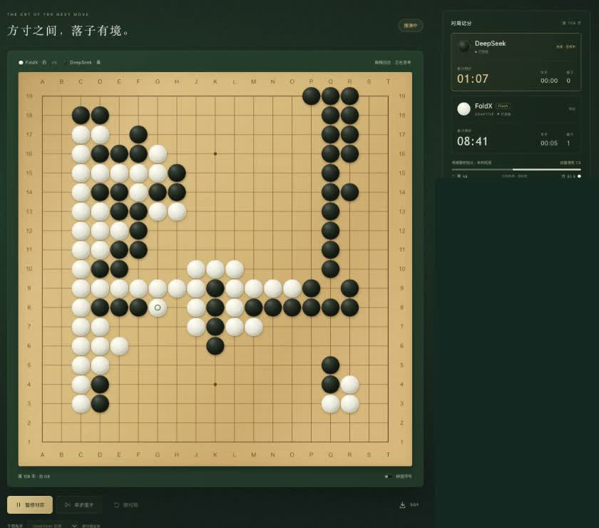

CASE 01 / 智能与策略判断
围棋对弈：理解局面，权衡下一步
Fold-X Flash 执白，与 DeepSeek 执黑进行 19×19 围棋对弈。通过连续落子，展示对局面、候选选择与后续影响的判断。
起点是策略判断：在明确规则下理解当前局面，并选择行动。
应用价值 · 适用于需要比较候选方案、权衡局部得失与后续影响的决策任务。
观察结果与证据边界
- 结束界面的估分显示白方领先 80.5；对手具体版本未提供。
- 视频保留原始对弈顺序，聚焦棋盘与计分。
这是单局演示的界面估分，未经独立裁判核验，不等于多局胜率或综合智力评测。
速度口径 · 5 倍速用于缩短观看时间，不代表模型响应速度。
关键画面


